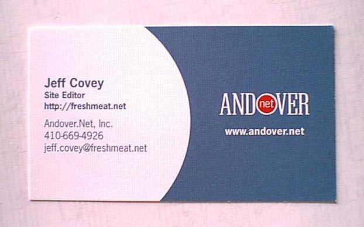
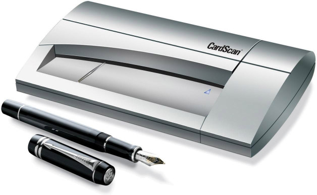
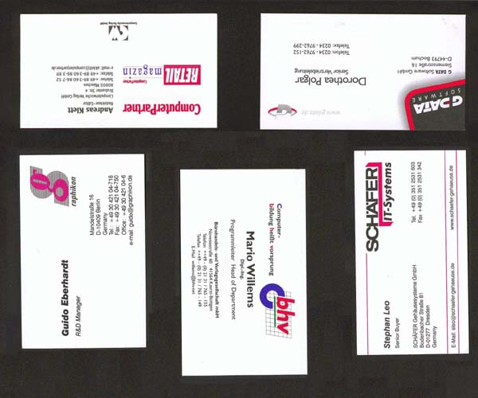
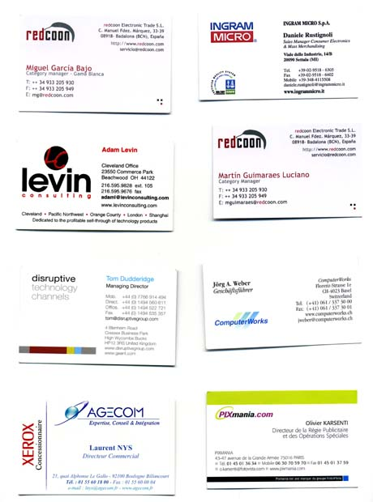
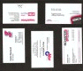
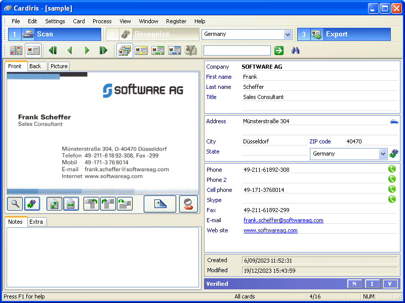
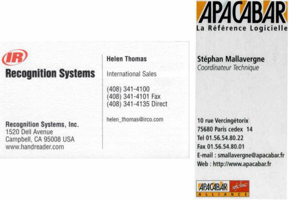
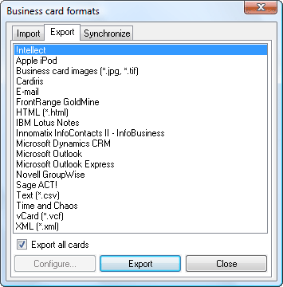

Tweet
Tweet
So much for recognizing full page documents in small or large volumes. But there’s another type of document you can convert into electronic files with OCR software: business cards. Given the proper software, you could be scanning your brochures… and any business card stapled to them!
OCR software that dematerializes business cards is actually called “BCR” software — “BCR” stands for “business card reading”. You scan your business cards, recognize them and convert them into an address database. That’s what “BCR” solutions in the strict sense do. The “BCR” functionality may even be built into your regular OCR software!
Some solutions offer extra functionality and are better called “business card organizers”. Why? Contrary to traditional OCR applications, the card organizers don’t discard the scans when the character recognition is completed. On the contrary, it makes good sense to archive the scanned business cards in the database. Enter any office and you’ll find the desk and drawers of the employees crowded with business cards of all types and places. Business cards suffer more than other documents from the known disadvantages of the paper world: they get lost easily, aren’t available to your colleagues, can’t be searched or sorted etc.

Business card organizers, “electronic Rolodexes”, improve the everyday operation of your office by getting rid of all business cards. You begin by scanning the business cards, thus putting images in a database. All business cards can be thrown away or returned to the owner as soon as they have been archived. This means that you never lose any information contained on a card, not even the company’s colorful logo or slogan, the contact’s photograph or still a second e-mail address which you don’t usually encode in your “traditional” contact manager or database. And when you are dealing with “exotic” business cards — in, say, Arabic or Vietnamese — which you simply cannot enter in a database, the color image is always there to be consulted!
When business card reading is a major application — you’re, say, scanning a great many business cards on a booth at a fair —, you can use a business card scanner. These scanners were specifically designed to scan business cards and have many advantages over other scanner types: their footprint is so small they hardly take up any space on your desk, they swiftly cope with business cards of varying paper and printing qualities and you never have to wonder about selecting the correct card format.

But not to worry: you can put your familiar flatbed scanner to good use as well. Some advanced BCR software will segment a larger image into the smaller business cards for you! The image below gets split into six separate business cards, the black border gets discarded and the business cards are straightened and deskewed.

Image segmentation against a white background is less flexible: the cards must be placed regularly on the flatbed with sufficient distance between two cards.

(Not that adding a black or white background to your business card images is very difficult. Scan the cards with the lid of your flatbed scanner open, that creates a black background for you. Or scan the cards with the lid of your flatbed scanner closed, that creates a white background for you!)
Whatever the color of the background, the end result looks like this: the business cards are separated and the (black or white) border gets discarded. The individual cards are straightened and deskewed, their orientation may be corrected.

The next phase is the OCR. In this context, text recognition allows to encode business cards without the time-consuming task of retyping them. Think of your last exhibition when you came back with an entire stack of business cards and it took your secretary two days to encode them!
The card’s data is extracted automatically from the image — we now know how that works — and the recognized data is assigned to specific database fields. This task is called field analysis; it is unique for BCR software and business card organizers.

BCR software extensively uses a knowledge database, thus acquiring the necessary intelligence to discriminate the first and last name, a city and its state, a telephone and a fax number etc. When your BCR software or business card organizer recognizes the character string “John Williams”, it “knows” that John is a first name and Williams a last name. In the same way so does the system recognize titles, such as “vice president”, “engineer”, cities such as Boise and Chicago, states such as Oregon and Maryland etc.
Each country has a different “style” of composing business cards; Italians compose an address differently than the French do, American ZIP codes and telephone numbers have a different syntax than their British counterparts etc. The number of countries supported by the field analysis varies dramatically per BCR software, but international software that supports a wide range of countries is available.

Once your business cards are converted into text placed in data fields, you have a real contact database, similar to a cardfile system: the data is directly searchable by any field — name, company name, city etc. Sort and select functions are available. Looking up a company, client or prospect is a cinch. Even with very little to go on, say, no more than the first characters of a company name, you are sure to find your contact again instantly.
Or export the contacts to your company’s SQL database… Which export formats are supported depends on your BCR software, but we can give a general idea. You could for instance save the contacts in a structured text file — say as comma-delimited data (CSV) or in the vCard format. (vCard files are swiftly imported into any vCard compliant application: double-click a vCard file and the contacts are added to your Windows or macOS contacts!)
Many BCR packages and business card organizers send the contacts directly to the major contact managers — Act!, FrontRange Goldmine —, the groupware suites I.B.M. Lotus Notes and Novell Groupwise, an Apple iPhone or other smartphone etc. Business card reading smoothly complements such applications as contact managers, databases or even word processors whose mail merge function allows to print letters, envelopes and labels.

And some other clearcut advantages of card organizers over the paper world are all too obvious: as you are dealing with a database, the information is centralized and available to all your colleagues. Also, databases are easily transportable on CD-ROM etc.
Summing up, “minimal” BCR software uses OCR technology (complemented by field analysis) to convert business cards into address records, but true business card organizers go the full circle from archiving scanned business cards to contact management. You archive, index and OCR business cards from around the world!
Previous section — Next section
Home page — Intro — Scanners — Images — History — OCR — Languages — Accuracy — Output — BCR — Pen scanners — Sitemap — Search — Contact – Feedback